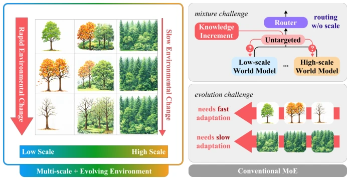
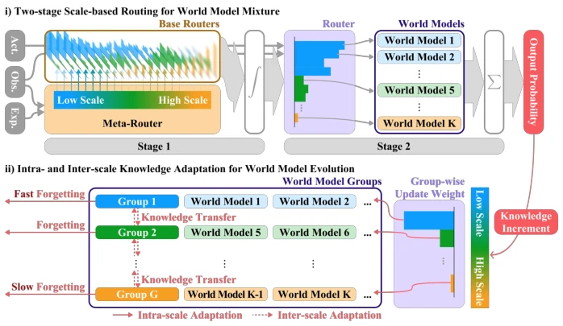
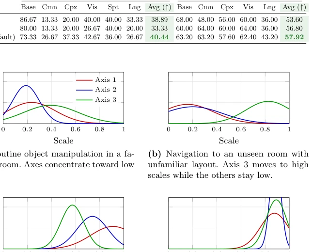
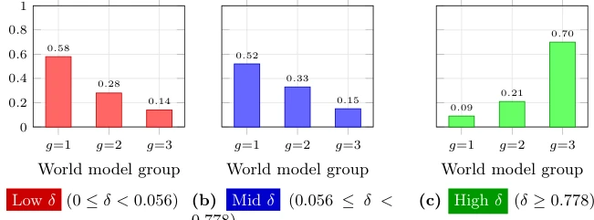
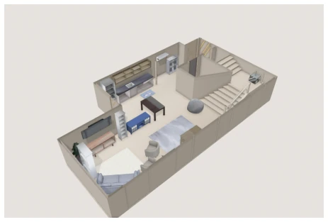
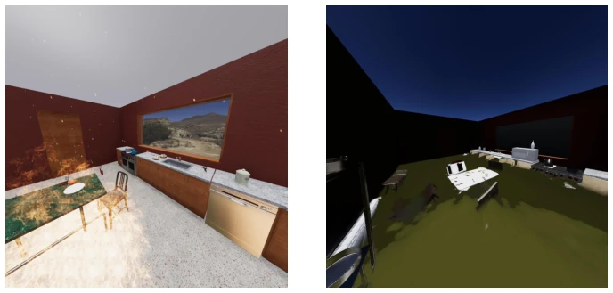

This paper forcibly adds a layer of "cognitive filter" to the "Mixture of Experts" (MoE) architecture of embodied intelligence. The authors keenly point out that existing MoE routing is too coarse, failing to distinguish when to use low-level physical models versus high-level abstract rules, resulting in an inability to update targetedly. The MuSix framework attempts to quantify environmental novelty using "experiential distance", forcibly applying the Construal Level Theory (CLT) from cognitive psychology to the routing mechanism; this approach is indeed clever, making routing decisions explicitly associated with scales. However, implementing such complex two-stage routing and cross-scale gating, the computational overhead and training stability are likely pitfalls. Experimental data looks good in simulation, but on the real robot Franka, performance is passable yet slightly inferior to the strongest baseline SayCanPay (Table 3), indicating the sim-to-real gap still exists. Overall, it is an engineering attempt with very beautiful theoretical packaging, but whether "multi-scale" is truly a silver bullet depends on whether it can withstand more complex dynamic environments later, after all, quantifying CLT into mathematical formulas itself carries overfitting risks.
When deployed in the real world, embodied agents face severe challenges of non-stationary environments. Existing VLM-based methods [7, 8, 11] often rely on fixed assumptions or single models, making it difficult to adapt targetedly to new environments; once the environment changes, full system retraining is often required. Although MoE [9] can alleviate catastrophic forgetting through expert selection, traditional MoE lacks "scale" awareness (scale-aware). This leads to two core problems: first, routing cannot clearly distinguish low-level physical dynamics from high-level abstract rules, unable to update specific scale knowledge targetedly during testing (Mixture Challenge); second, a unified update strategy cannot adapt to the obsolescence rates of knowledge at different scales; low-level knowledge changes fast, high-level rules are relatively stable, forcing unified updates leads to knowledge conflict or forgetting (Evolution Challenge). Therefore, a world model hybrid framework that can explicitly distinguish scales and allow differential evolution is needed to balance flexibility and stability.
The core of the MuSix framework lies in "scale-aware" world model hybridization and evolution, with the overall process divided into two main parts: routing and adaptation. 1. **Two-stage Scale Routing**: First, the Meta-router calculates the novelty of the current context relative to historical experience based on "experiential distance", mapping to a continuous scale space to generate a weight function. This draws on Construal Level Theory (CLT) [16], converting psychological distance into a quantifiable basis for scale selection. Subsequently, the Base router selects specific world models combined with scale weights. This decoupled design makes routing decisions explicitly associated with specific scales, avoiding the black-box routing of traditional MoE. 2. **Knowledge Adaptation Mechanism**: Addressing the evolution challenge, intra-scale and inter-scale adaptation are introduced. Intra-scale adaptation utilizes scale-dependent forgetting rates, allowing low-scale knowledge to refresh quickly while high-scale abstract knowledge is retained persistently. Inter-scale adaptation transfers knowledge between adjacent scales through a gating mechanism (gated cross-scale transfer), maintaining hierarchical consistency. 3. **Training Objectives**: Combining world model prediction loss and scale alignment loss to ensure consistency between experiential distance and scale selection. The loss function includes alignment terms, variance regularization terms, and magnitude regularization terms to prevent routing output divergence.
The paper validates MuSix on EmbodiedBench [19] and HAZARD [22]. EmbodiedBench tests multi-scale reasoning capabilities (e.g., EB-Habitat, EB-Navigation), HAZARD tests adaptation under dynamic disaster environments (fire, flood). Baselines include LLM-Planner [15], SayCanPay [7], FLARE [11], and traditional MoE. **Results**: MuSix improved by 6.05% over SayCanPay on EB-Habitat, and by 1.49% over FLARE in HAZARD fire scenarios. Real robot Franka experiments show an average success rate of 56.2%, slightly lower than SayCanPay's 58.4%, but superior to other baselines. **Ablation**: Removing Meta-router leads to a significant performance drop, proving the necessity of two-stage routing. Removing scale alignment loss also significantly reduces performance. Different world model architecture variants (Variant I-V) all perform stably, indicating the framework has strong generalizability. **Findings**: 3D scale space performance is superior to 1D/2D, and different axes show specific responses in different contexts, indicating scale space can capture multi-dimensional novelty.
其他图片Other Figures

Fig. 1: Explanation of mixture challenge and evolution challenge on conventional MoE

Fig. 2: Overall framework of MuSix

Fig. 4: Per-axis meta-routing score distributions for four input types on EmbodiedBench. Each curve shows wMR(s) projected onto one axis of the 3D scale space.

Fig. 5: World model group activation at different experiential distances on EmbodiedBench. Each bar shows the aggregate routing score for group g (g = 1: low- scale, g = 2: mid-scale, g = 3: high-scale). Low, Mid, and High denote equal-frequency tertiles of experiential distance δ (each n ≈790).

Fig. 6: The top-view example of the Habitat environment.

Fig. 7: The example scene of the HAZARD environment.